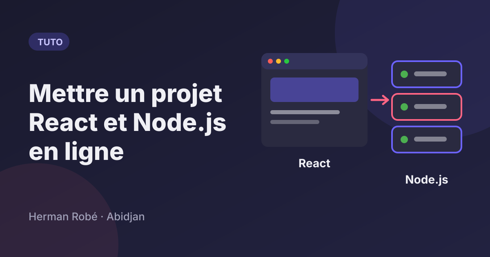
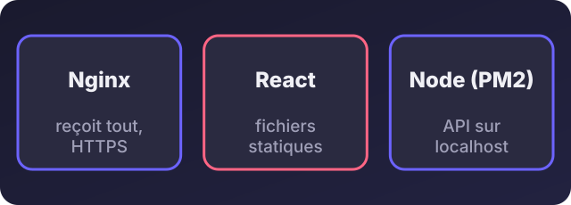
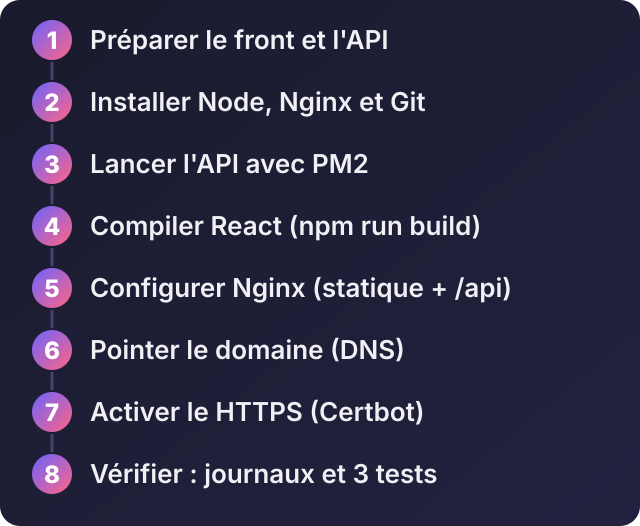
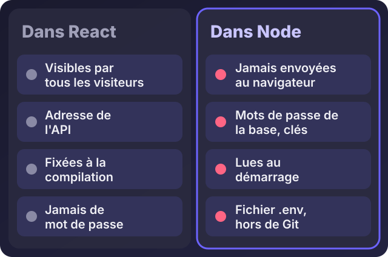

Comment mettre en ligne un projet React et Node.js sur un VPS (Nginx, PM2, HTTPS)

Écouter cet article · environ 7 min
Votre application React et votre API Node.js marchent sur votre ordinateur. Il faut maintenant qu'elles marchent sur Internet, pour de vrais utilisateurs. Voici la méthode que je recommande, sur un VPS Ubuntu, avec Nginx pour l'entrée, PM2 pour garder l'API en vie, et un certificat HTTPS gratuit.
Si vous n'avez pas encore de serveur, lisez d'abord l'article sur le choix de l'hébergement. Si le serveur est neuf, l'article suivant explique comment le configurer.
Comment ça marche, en une image

- React est compilé en fichiers statiques (HTML, CSS, JavaScript). Ils n'ont pas besoin de Node pour être servis : Nginx les envoie directement.
- Node.js fait tourner votre API. Il n'est pas visible depuis Internet : il écoute seulement sur la machine elle-même.
- Nginx est la porte d'entrée : il reçoit toutes les demandes, sert React, et transmet à Node celles qui commencent par
/api. - PM2 relance Node s'il plante ou si le serveur redémarre.
Les huit étapes

Étape 1 : préparer les deux projets
Les variables d'environnement : la règle qui évite les fuites.

Tout ce que vous mettez dans React est envoyé au navigateur et donc visible par n'importe qui. Avec Vite, seules les variables dont le nom commence par VITE_ sont incluses dans le code, et elles sont fixées au moment de la compilation. N'y mettez jamais de mot de passe ni de clé secrète. Les secrets vivent dans le fichier .env de l'API, qui n'est jamais envoyé sur GitHub.
L'adresse de l'API : dans React, appelez l'API avec un chemin relatif, par exemple /api/commandes, et pas http://localhost:3000/api/commandes. Ainsi, le même code marche en local et en ligne, et vous évitez les problèmes de CORS.
Côté Node, faites écouter l'API uniquement sur la machine locale :
app.listen(process.env.PORT || 3000, '127.0.0.1');Elle n'est ainsi pas accessible directement depuis Internet : seul Nginx peut lui parler.
Étape 2 : installer Node.js, Nginx et Git
sudo apt update
sudo apt install -y nginx git curlPour Node.js, le plus pratique est nvm, qui permet de choisir la version. Suivez la commande d'installation affichée sur la page officielle de nvm, rouvrez le terminal, puis :
nvm install --lts
node -v
npm -vLa version « LTS » est celle qui reçoit des mises à jour de sécurité sur la durée : c'est celle qu'il faut sur un serveur.
Étape 3 : lancer l'API avec PM2
sudo mkdir -p /var/www/monappli
sudo chown $USER:$USER /var/www/monappli
cd /var/www/monappli
git clone https://github.com/VOTRE_COMPTE/votre-api.git api
cd api
npm ci --omit=dev
nano .envDans .env, mettez les variables de production (port, base de données, clés). Testez à la main, puis arrêtez avec Ctrl+C :
node server.jsPuis confiez-la à PM2 :
npm install -g pm2
pm2 start server.js --name monapi
pm2 save
pm2 startupLa dernière commande affiche une ligne à copier-coller : elle permet à PM2 de relancer l'API au redémarrage du serveur. Pour surveiller :
pm2 status
pm2 logs monapiÉtape 4 : compiler React
cd /var/www/monappli
git clone https://github.com/VOTRE_COMPTE/votre-front.git front
cd front
npm ci
npm run buildAvec Vite, la compilation produit un dossier dist. Selon l'outil, il peut s'appeler build. Sur un petit VPS, la compilation peut manquer de mémoire : dans ce cas, compilez sur votre ordinateur et envoyez le dossier avec scp.
Étape 5 : configurer Nginx
Créez /etc/nginx/sites-available/monappli :
server {
listen 80;
listen [::]:80;
server_name votre-domaine.com www.votre-domaine.com;
root /var/www/monappli/front/dist;
index index.html;
location / {
try_files $uri /index.html;
}
location /api/ {
proxy_pass http://127.0.0.1:3000;
proxy_http_version 1.1;
proxy_set_header Host $host;
proxy_set_header X-Real-IP $remote_addr;
proxy_set_header X-Forwarded-For $proxy_add_x_forwarded_for;
proxy_set_header X-Forwarded-Proto $scheme;
}
}Deux détails qui comptent :
try_files $uri /index.html;permet à React de gérer ses propres pages. Sans cette ligne, actualiser la page sur/commandesdonne une erreur 404.- Le préfixe
/apiest transmis tel quel à Node, donc vos routes d'API doivent commencer par/api. Si ce n'est pas le cas, écrivezproxy_pass http://127.0.0.1:3000/;avec la barre oblique finale.
Activez le site :
sudo ln -s /etc/nginx/sites-available/monappli /etc/nginx/sites-enabled/
sudo nginx -t
sudo systemctl reload nginxÉtape 6 : le nom de domaine
Chez le gestionnaire de votre domaine, créez un enregistrement A qui pointe vers l'adresse IP du VPS (voir l'article sur l'adresse IP), puis attendez la propagation.
Étape 7 : le HTTPS
sudo apt install -y certbot python3-certbot-nginx
sudo certbot --nginx -d votre-domaine.com -d www.votre-domaine.comCertbot obtient un certificat gratuit et configure Nginx. Le renouvellement est automatique.
Étape 8 : vérifier
- Ouvrez
https://votre-domaine.com: React s'affiche. - Ouvrez une page profonde (
/commandes) puis actualisez : elle doit rester affichée. - Testez un appel d'API depuis l'application.
- Si quelque chose ne marche pas :
pm2 logs monapipour l'API,sudo tail -f /var/log/nginx/error.logpour Nginx.
Côté pare-feu, seuls les ports 22 (SSH), 80 et 443 doivent être ouverts. Le port de Node (3000) ne doit pas l'être.
Les erreurs les plus fréquentes
- 502 Bad Gateway : Nginx n'arrive pas à joindre Node. L'API est arrêtée (regardez
pm2 status), ou le port ne correspond pas. - 404 en actualisant une page : il manque
try_files $uri /index.html;. - Une variable vaut
undefineddans React : son nom ne commence pas parVITE_, ou vous n'avez pas recompilé après l'avoir changée. - Erreur de CORS : vous appelez l'API par une autre adresse. Utilisez un chemin relatif
/api/.... - Contenu mixte (HTTP et HTTPS) : vérifiez que l'adresse de l'API n'est pas écrite en
http://. - L'API s'arrête après la déconnexion SSH : elle n'est pas sous PM2, ou
pm2 saven'a pas été fait.
Mettre à jour ensuite
cd /var/www/monappli/api
git pull
npm ci --omit=dev
pm2 restart monapi
cd ../front
git pull
npm ci
npm run buildPour React, il n'y a rien à redémarrer : Nginx sert les nouveaux fichiers.
Une variante : séparer le front et l'API
Vous pouvez aussi héberger uniquement l'API sur le VPS, et mettre React sur un service d'hébergement statique (Netlify, Cloudflare Pages ou Vercel, qui ont des offres gratuites). Dans ce cas, l'API doit autoriser l'adresse du front par une règle CORS. C'est pratique pour les mises à jour automatiques à chaque envoi sur GitHub.
Si vous préférez me confier la mise en ligne, je prépare le serveur, je déploie vos deux projets, je configure le domaine, le HTTPS, les sauvegardes et la supervision. Écrivez-moi sur WhatsApp avec le nom du projet.